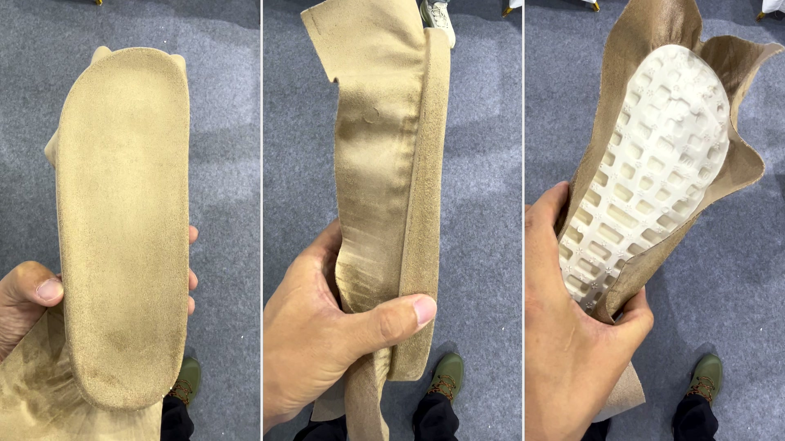
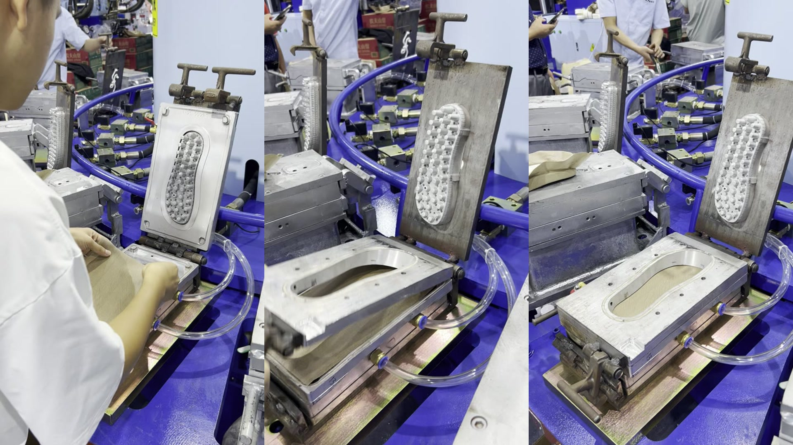
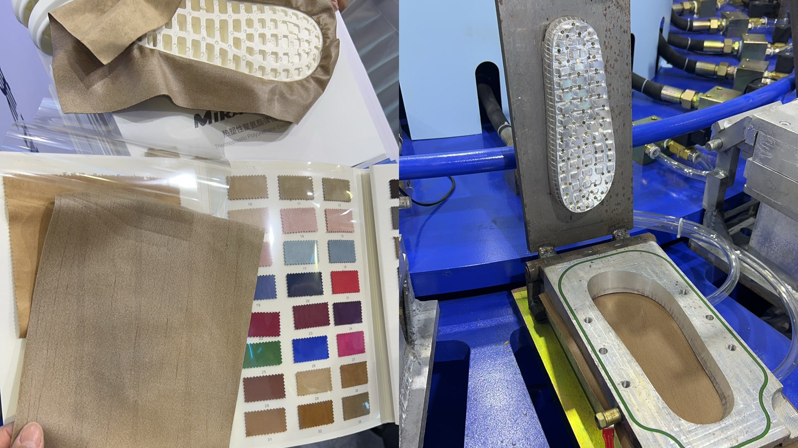
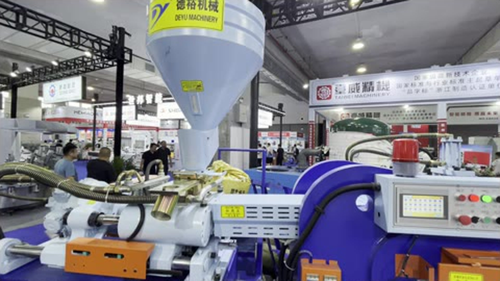
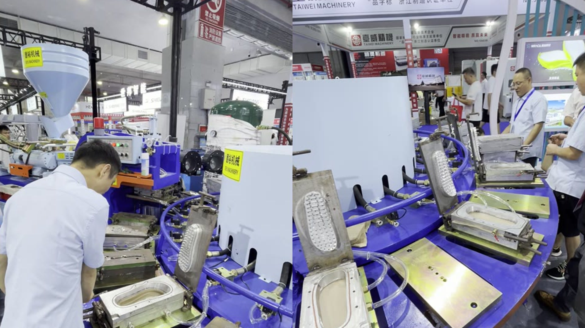

The Short Answer
The DY-1124-VAC combines vacuum fabric positioning with PVC injection moulding to produce a fabric-covered midsole in one moulding cycle. The vacuum draws a prepared textile into the footbed and sidewall contours, holds it in position while the mould closes, and allows PVC to be injected behind it.
For the right midsole design, this can replace several separate manual operations: wrapping fabric around the edge, brushing adhesive, holding or clamping the fabric until it stays in place, and painting or refinishing exposed PVC surfaces. The result is not simply a PVC part with fabric glued on afterwards. The fabric becomes part of the moulded component.
After moulding, an edge-trimming machine removes the excess fabric. The finished midsole can then be bonded with the outsole and upper during final shoe assembly.

Why the Traditional Wrapping Process Takes So Much Labour
Fabric-covered PVC midsoles are useful in casual slippers and sandals because the fabric can create the finished foot-contact surface and continue around the visible side edge. The conventional workflow, however, can involve several separate steps after the PVC part has already been moulded:
- cut the fabric to shape;
- apply adhesive to the midsole, fabric or both;
- align the fabric on the footbed;
- pull and wrap it around the side edge;
- hold, clamp or press it while the adhesive develops strength;
- trim wrinkles and excess material; and
- paint, touch up or otherwise finish any exposed side areas.
This work depends heavily on operator skill. Curves around the toe and heel are especially sensitive: too little tension can leave wrinkles, while too much tension can distort the weave, shift a printed pattern or pull the fabric away from the intended edge line. Adhesive quantity, open time and manual positioning introduce additional variation.
The objective of vacuum fabric injection is to move the most difficult shaping and holding work into the moulding cycle.
How Vacuum Fabric PVC Injection Works
The exact mould construction varies with the midsole, but the production sequence follows six practical steps.
1. Prepare a compatible fabric blank
The textile is cut with enough allowance to cover the footbed and the required sidewall area. Fabric thickness, stretch, air permeability, backing and heat resistance must be selected for both vacuum forming and contact with hot PVC.
2. Position the fabric over the open mould
The operator places the blank over the lower cavity. Registration marks, a cutting template or mould features can help keep the grain, colour and pattern aligned.
3. Apply vacuum
The machine requires a vacuum pump and a vacuum storage tank as auxiliary equipment. They provide the vacuum source for the mould circuit. Vacuum channels and small openings then draw air from behind the textile, pressing it against the footbed, toe curve, heel curve and sidewall transition.
4. Confirm the fabric is seated
Before closing the mould, the operator checks that the fabric is smooth, centred and held below the sealing surface. This visual check is important because the vacuum positions the fabric, but it cannot correct an incorrectly cut or badly aligned blank.
5. Close the mould and inject PVC
The mould closes while vacuum continues to hold the textile. PVC is injected into the cavity behind the fabric. Mould design, fabric construction and process settings are tuned so the textile remains in place rather than being pushed or folded by the flowing material.
6. Cool, open, trim and inspect
After cooling, the fabric-covered PVC midsole is removed. An edge-trimming machine removes the excess fabric, and the operator checks the footbed, side coverage, bond, colour and edge definition. After inspection, the midsole is ready to be bonded with the outsole and upper to make the complete shoe.

The general engineering principle is established in footwear injection moulding: vacuum passages can hold a textile or footwear insert against a mould surface during positioning, closing and injection. Patents describing direct-injection footwear systems also identify PVC as a compatible injected material. The DY-1124-VAC applies this principle to rotary production of fabric-covered PVC midsoles.
What Changes in the Finished Midsole?
The largest difference is where the fabric-to-PVC interface is created. In a conventional workflow, a finished PVC midsole is wrapped later. With vacuum fabric injection, the interface is formed inside the mould.
This can create three practical results:
- A finished foot-contact face: the textile becomes the visible surface under the foot, so the PVC does not require a separate painted finish on that area.
- Continuous side coverage: when the blank and mould are designed correctly, the fabric follows the sidewall instead of being manually wrapped after moulding.
- Repeatable edge location: the cavity and vacuum zone help define where the fabric sits from pair to pair.
It is important to use precise language. The process can remove the separate glue-and-wrap operation for the midsole surface and sidewall. It does not mean that every adhesive operation elsewhere in the finished shoe disappears.

Five Manufacturing Benefits
1. Fewer post-moulding operations
Combining fabric positioning and PVC injection can reduce separate wrapping, brushing, pressing and side-finishing stations. A factory can evaluate the benefit by comparing total labour minutes per accepted pair, not only the injection cycle time.
2. Less dependence on manual wrapping skill
The operator still needs to place and inspect the fabric, but the mould and vacuum perform much of the three-dimensional holding. This can make output less dependent on how consistently each operator stretches and fixes the side edge by hand.
3. A cleaner, more consistent appearance
Vacuum helps the textile follow the cavity surface before injection. When the fabric, vacuum distribution and mould fit are correct, the process can reduce wrinkles, local lifting and uneven side coverage.
4. More design options without a painted footbed
Different textile colours, textures and printed patterns can become the finished visible surface. This gives product developers another way to distinguish a casual sandal or slipper without relying only on PVC colour or post-moulding paint.
5. Better production flow for repeat orders
The benefit is strongest when the factory has stable fabric specifications, dedicated moulds and repeat order volume. Under those conditions, the rotary machine can combine moulding and surface finishing in a continuous workflow.

The Process Is Not Automatic Without Good Control
Vacuum solves a positioning problem, but it does not remove the need for development trials. A reliable project should control the following variables.
Fabric permeability and backing
If a fabric is too open, vacuum may leak through it instead of pulling it evenly into the cavity. If it is too stiff or has too little stretch, it may bridge across toe and heel curves. Some constructions may need a backing or temporary film to distribute vacuum and prevent visible suction marks.
Fabric-to-PVC compatibility
The factory should test peel strength, heat ageing, flexing, humidity and any chemicals expected during later assembly. Different textile finishes or back coatings can change the bond to PVC.
Blank shape and alignment
A vacuum system cannot compensate for inconsistent cutting. The blank needs repeatable dimensions and enough edge allowance for the intended coverage and trimming method.
Vacuum channels and mould maintenance
Blocked openings, leaking hoses or damaged seals reduce holding force. The mould's vacuum circuit should be part of routine cleaning and preventive maintenance.
Injection and cooling settings
Injection speed, material temperature, pressure and gate position affect how strongly the PVC flow acts on the fabric. Cooling must be sufficient for removal without distortion. The final recipe must be developed with the actual PVC compound, textile and part thickness.

DY-1124-VAC Production Configuration
The current DY-1124-VAC configuration is designed for one-colour PVC injection with vacuum fabric positioning.
| Item | Current specification |
|---|---|
| Model | DY-1124-VAC |
| Layout | 24-station rotary |
| Material | PVC |
| Clamping force | 55 tons |
| Screw diameter | 65 mm |
| Maximum injection capacity | 660 cm3 per shot |
| Typical productivity | 130 pairs per hour |
| Mould size | 480 x 320 x 180 mm |
| Total power | 31.5 kW |
| Machine dimensions | 5.8 x 4.7 x 2.175 m |
| Machine weight | 6.5 tons |
| Required auxiliary equipment | Vacuum pump and vacuum storage tank |
Productivity is an application value, not a guarantee for every design. Actual output depends on cavity count, midsole weight and thickness, fabric loading time, cooling requirement, operator rhythm and the accepted quality standard.
Which Products Are a Good Fit?
The process is especially relevant to:
- casual slipper midsoles with a textile foot-contact surface;
- sandal midsoles requiring fabric coverage over both the top and side edge;
- repeat programs where manual wrapping has become a labour bottleneck;
- designs that currently require painting or touch-up on exposed PVC; and
- collections that use fabric colour or texture as a visible design feature.
It may be less attractive for very small orders with frequent shape changes, because the vacuum mould and fabric blank must be developed for each size and geometry.
What to Send for a Production Trial
For a meaningful trial, send the machine supplier:
- a finished midsole sample or 3D drawing;
- the complete size range and cavities required;
- the actual fabric, including backing and finish;
- the PVC compound and target hardness;
- the required fabric coverage line;
- colour and pattern alignment requirements;
- peel, flex, ageing and appearance standards; and
- the target pairs per hour and shift plan.
A good trial should measure accepted pairs, not only whether the first sample can be moulded.
Frequently Asked Questions
Does the DY-1124-VAC eliminate glue completely?
It can eliminate the separate glue-and-wrap operation used to attach fabric to the midsole footbed and sidewall. The finished midsole still needs to be bonded with the outsole and upper during shoe assembly.
Can any fabric be used?
No. Stretch, permeability, thickness, backing, heat resistance and PVC adhesion all matter. The production fabric should be tested in the actual mould.
Why use vacuum instead of simply laying the fabric in the mould?
The cavity is three-dimensional. Vacuum helps pull the textile into curves and holds it in position while the mould closes and PVC begins to flow.
Is a special mould required?
Yes. The mould needs the correct cavity geometry, vacuum passages, sealing arrangement and fabric allowance for the target midsole.
What defects should be checked during trials?
Check wrinkles, fabric movement, suction marks, incomplete side coverage, PVC bleed-through, weak bonding, colour change, trimming consistency and dimensional stability.
What is the rated output?
The current website specification is 130 pairs per hour. Final output depends on the complete moulding and fabric-loading cycle.
Talk to Deyu About a Vacuum Fabric Midsole Trial
View the DY-1124-VAC product page or send Deyu your midsole sample, fabric, PVC compound, size range and target output. We can evaluate the mould concept and trial conditions before confirming the production solution.